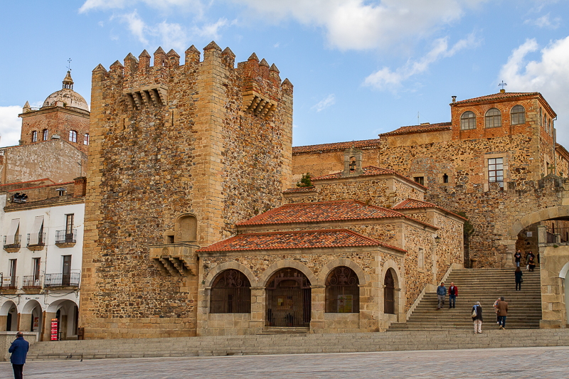
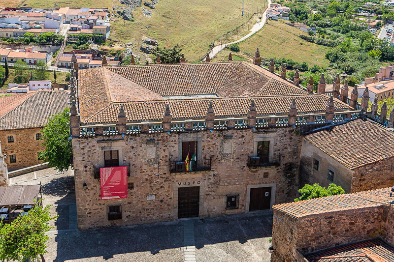
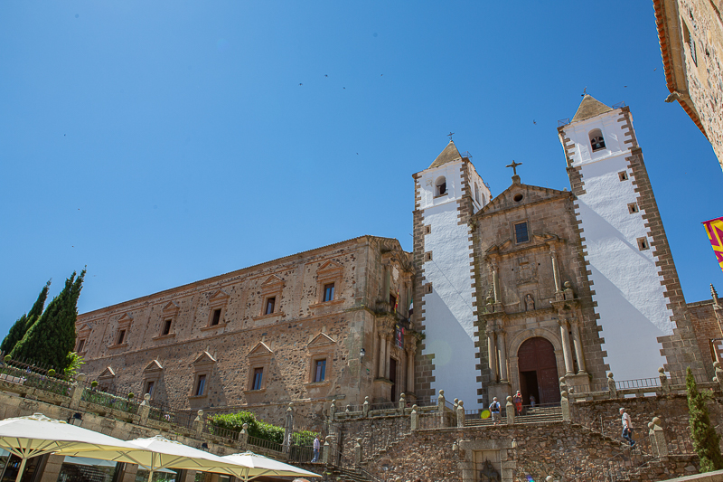

Historia de Cáceres
Una ciudad con siglos de historia

Torre de Bujaco
La Torre de Bujaco es uno de los símbolos de Cáceres. Construida en el siglo XII por los almohades, ha sido testigo de la historia de la ciudad y ofrece unas vistas impresionantes de la Plaza Mayor.

Museo de Cáceres
El Museo de Cáceres alberga colecciones de arqueología, etnografía y bellas artes, mostrando la riqueza cultural e histórica de la región desde la prehistoria hasta la actualidad.

Iglesia de San Francisco Javier
La Iglesia de San Francisco Javier, con sus dos torres blancas, es uno de los monumentos más reconocibles del skyline cacereño y un ejemplo destacado del barroco extremeño.